Informe automatizado de topografía de la lesión talámica mediante ultrasonido focal de alta intensidad
Imágenes de la lesión talámica en T1, T2, SWAN y FLAIR


Imágenes de la lesión talámica en T1, T2, SWAN y FLAIR con formato mosaico
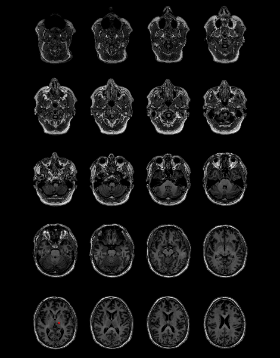
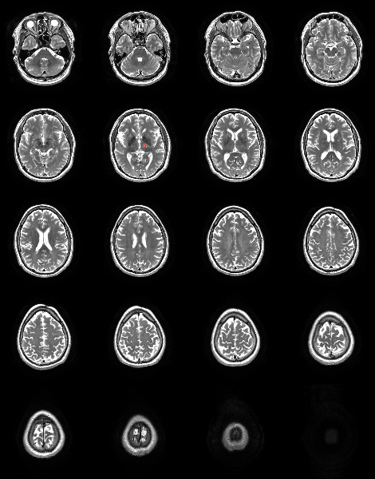
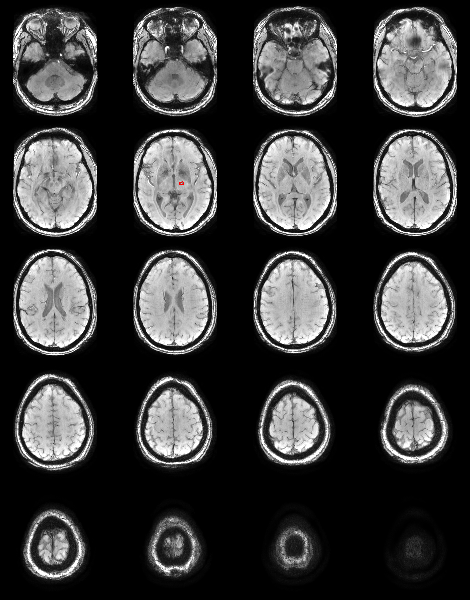
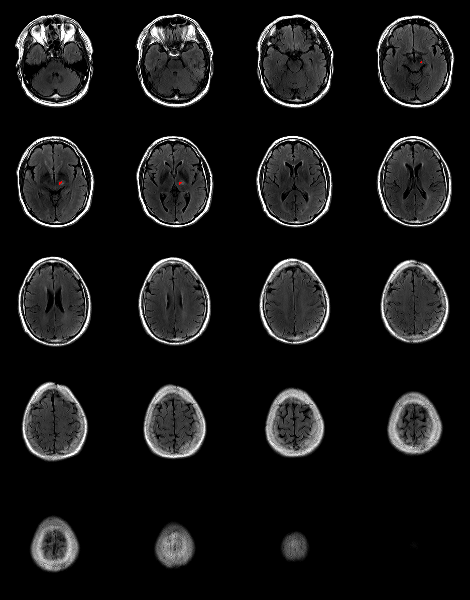
Características de la lesión
| Volumen |
199.4936 mm |
| Distancia PC |
6.8125 mm |
| Distancia PC (%) |
27.0559% |
| Lateralidad |
12.3889 mm |
| Distancia inferior del plano AC-PC |
-1.1389 mm |
| VIM ocupado por la lesión |
6.5876% |
| Lesión en VIM |
17.3611% |
Comparación estadística con una población de pacientes a los que se ha aplicado el tratamiento
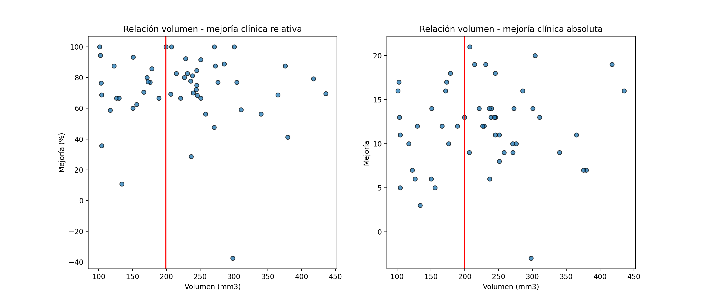
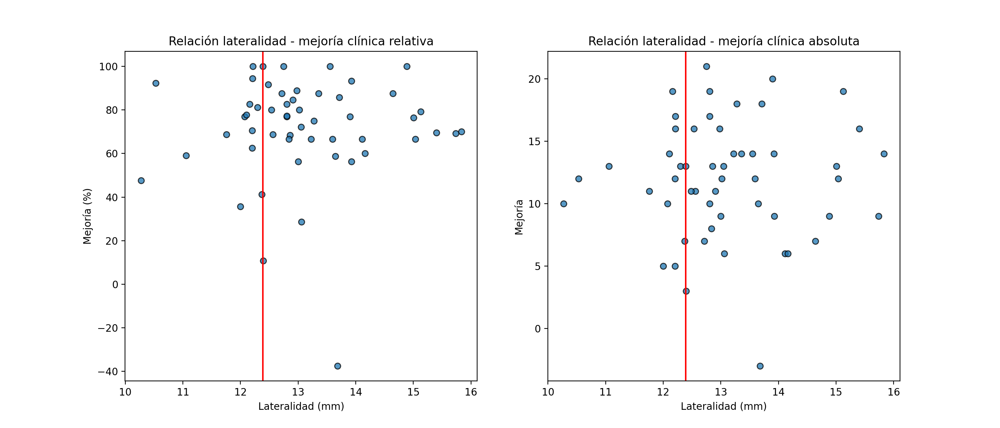

Relación y comparación entre las características de la lesión talámica y la aparición de ataxia y parestesia a los 3 meses
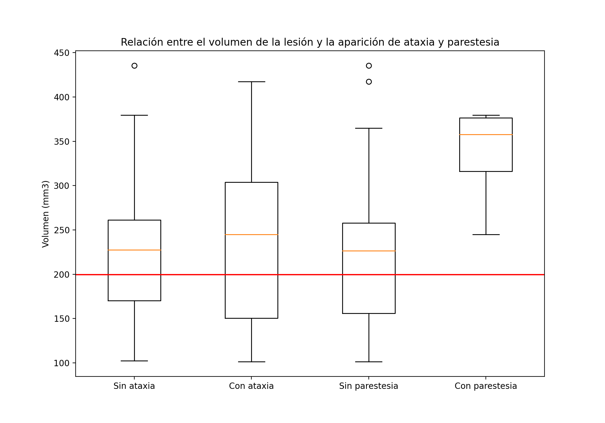
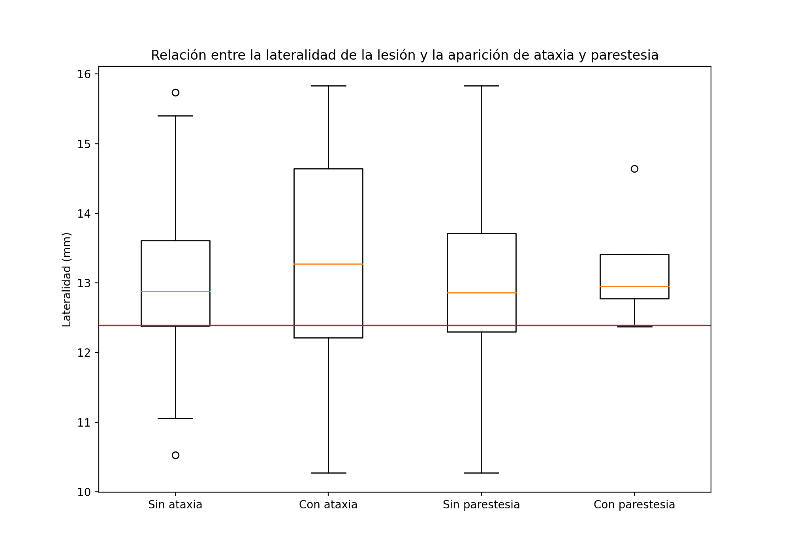
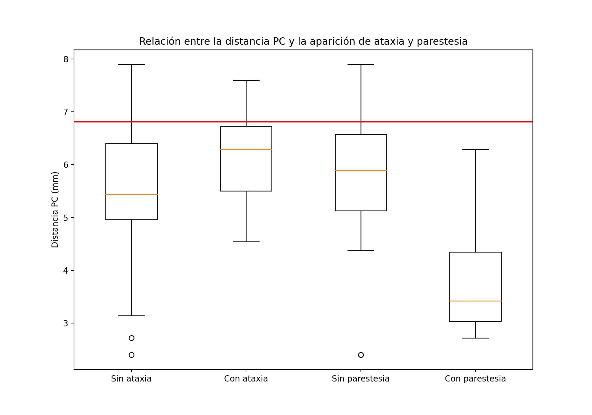
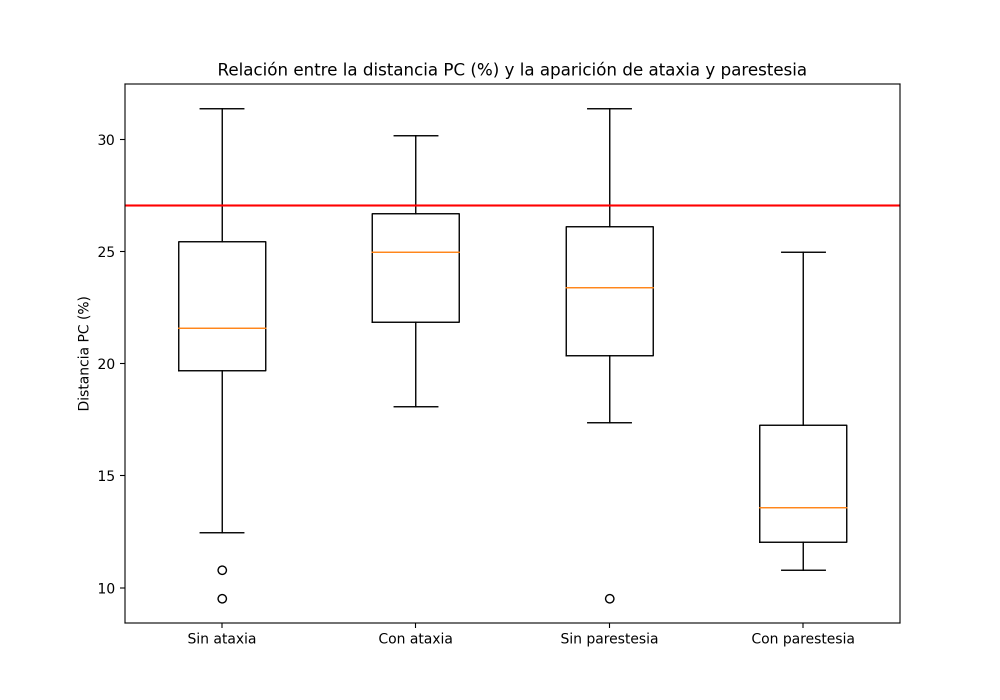
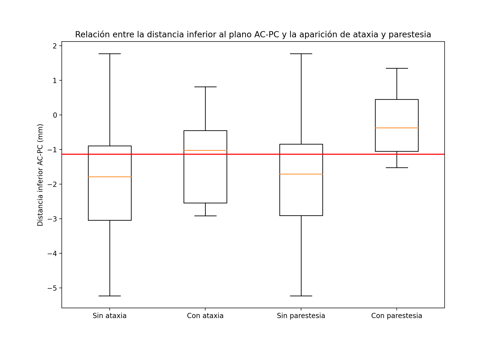
 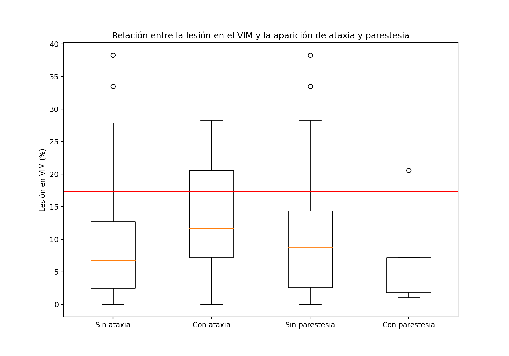
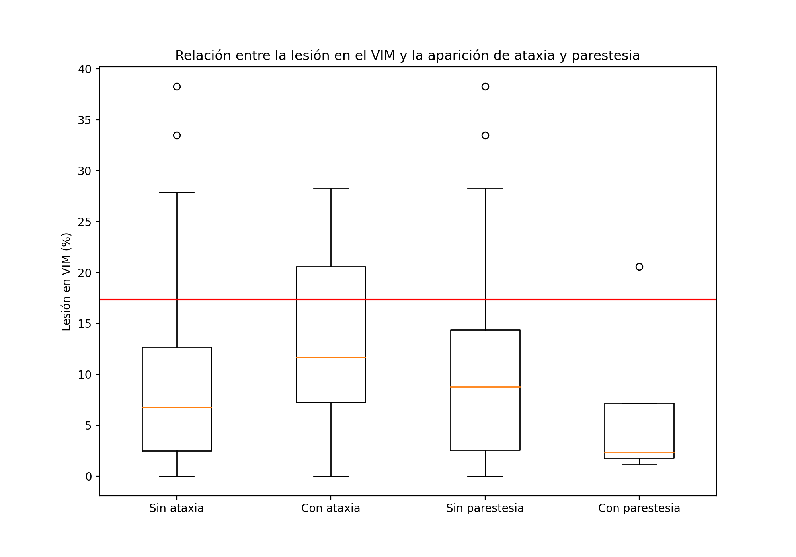